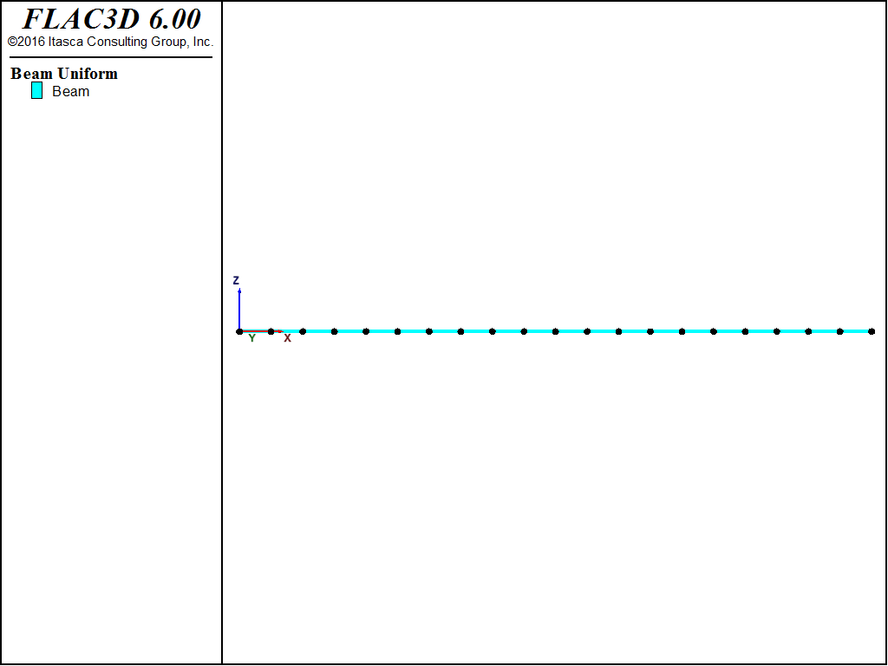
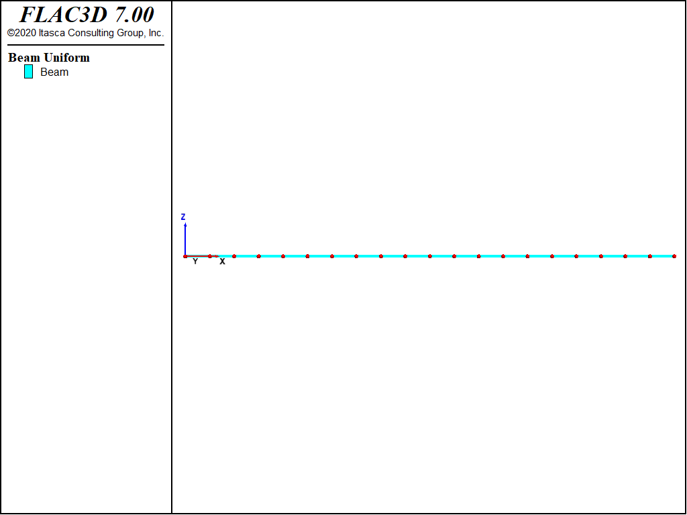
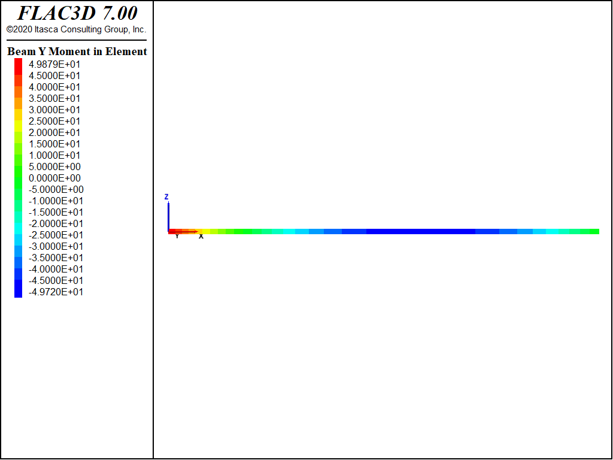
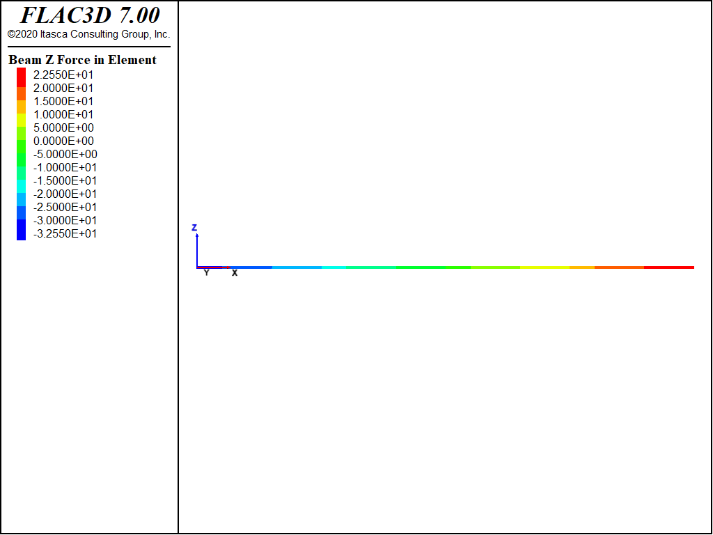
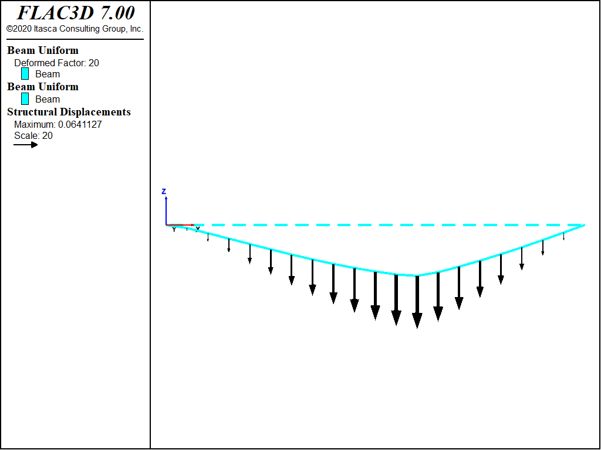

静载梁中塑性铰的发展
问题描述
注意
要在 FLAC3D 中查看该项目，请使用菜单命令 。选择 “VerificationProblems/ PlasticHingesBeam” 并选中 “PlasticHingesBeam.f3prj” 载入。所用 主数据文件（main data files） 示于本例末尾。其余数据文件可在该项目中找到。
长 \(2 l\) 的超静定梁承受分布荷载 \(w\)。该荷载相当于梁的自重。假定梁能承受最大弯矩 \(M^{pl}\)（超过后形成塑性铰，截面在常荷载下无限变形），问题在于求出产生机构运动、从而导致体系破坏的最大荷载 \(w^{max}\)。该问题示于 图 （Figure）Figure #plastichingesbeam-problem。
可用结构塑性理论求解该问题（例如见 Riley 与 Zachary，1989，第 581-586 页）。按该理论，塑性铰的发展由最大弯矩的出现决定。

图 （Figure）Figure #plastichingesbeam-problem 的下部示出假定弹性行为时连续梁的弯矩分布。最大弯矩出现在位置 \(A\)，图中记为 \(M_A=M_1^{max}\)。第二个最大弯矩出现在点 \(D\) 处，记为 \(M_D=M_2^{max}\)。（注意对给定的对称问题几何，点 \(C\) 与 \(A\) 之间还有另一个图中未标出的点 \(D\)。）
考虑作用于梁上逐渐增大的超载 \(w\)。若梁能承受的最大塑性弯矩为 \(M^{pl}\)，则第一个塑性铰将在最先达到 \(M^{pl}\) 处（即点 \(A\)）发展。第一个铰形成后问题仍然稳定，体系表现为两根独立梁，并在点 \(A\) 处保持常量弯矩 \(M^{pl}\)。当第二个铰发展时（即出现第二个最大弯矩的点 \(D\) 处）体系将破坏。这是因为 \(D\) 处的第二个铰形成机构运动，使点 \(B\) 处的滚轴可自由向右移动。
铰的形成可用 FLAC3D 模拟。图 （Figure）Figure #plastichingesbeam-problem 所示问题为程序中实现的塑性铰逻辑提供了一个检验。
该试验的问题条件为
| 长度 | \(l\) = 10 m |
| 高度 | \(h\) = 1 m |
| 塑性弯矩 | \(M^{pl}\) = 50 MN-m |
| 杨氏模量 | \(E\) = 210 GPa |
注意与梁可变形性相关的性质（高度 \(h\) 与杨氏模量 \(E\)）在本问题中并不相关，但作为 FLAC3D 模型的输入仍需要。
闭式解
图 （Figure）Figure #plastichingesbeam-problem 中点 \(D\)（第二个塑性铰发展处）的位置可由简单梁理论分析求得。
考虑 图 2（Figure 2） 所示简支梁。它表示 图 （Figure）Figure #plastichingesbeam-problem 中跨中已发展出第一个塑性铰后的状况。点 \(A\) 处的弯矩为常量，等于 \(M^{pl}\)。


图 2：点 A 处塑性铰形成后的弯矩与剪力分布。
图 2（Figure 2） 还示出梁右半部分弯矩 \(M(x)\) 与剪力 \(Q(x)\) 的分布。于是目标是求最大弯矩（将发展出导致破坏的第二个塑性铰）的坐标 \(x_D\)。
点 \(B\) 处的反力由点 \(A\) 处力矩平衡条件求得，即
剪力 \(Q(x)\) 的分布由下式给出
弯矩 \(M(x)\) 的分布由下式给出
坐标 \(x_D\) 可由前述表达式与条件 \(Q(x_D)=0\) 求得
最大超载 \(w^{max}\) 由 \(x=x_D\) 处的条件 \(M(x) = M^{pl}\) 求得
应用这些方程即可确定第二个塑性铰的位置 \(x_D\) 与最大荷载 \(w^{max}\)。结果为
FLAC3D Model
本问题用 FLAC3D 中两种不同的塑性铰确定方法求解（见 梁性质（Beam Properties））。第一种方法在结构节点处赋予极限塑性弯矩；第二种方法需在每个节点位置创建双节点，并赋予可变形连接以连接各双节点。
通过限制塑性弯矩形成塑性铰 —— 该方法用 结构梁单元属性塑性弯矩（structure beam property plastic-moment） 命令为所有结构节点赋予极限塑性弯矩。梁的右半部分离散为 20 个单元，每个长 0.5 m（见 图 3（Figure 3））。梁含 21 个节点，各节点的极限塑性弯矩为 50 MN-m。


图 3：图 （Figure）Figure #plastichingesbeam-problem 中梁的 FLAC3D 模型。
双节点法形成塑性铰 —— 第二种方法在所有可能发展塑性铰的结构节点处定义双节点。梁的右半部分离散为 20 个单元，每个长 0.5 m。各单元由两个节点定义（在 structure beam create 命令中使用 separated 关键字）；因此梁含 40 个节点。相邻单元的节点用 structure node join 命令连接起来，以允许塑性铰形成的可能。
共有 19 个连接（即 图 3（Figure 3） 中除两端节点外的所有节点都被连接；每对节点定义一个连接）。先用 structure link attach 命令改变连接条件，再通过 structure link property 命令为 \(y\) 转动指定可变形连接性质，从而把极限塑性弯矩赋给这些连接。用 yield-compression 与 yield-tension 关键字把塑性弯矩赋给该命令。
两种方法中施加均布超载 —— 均布超载 \(w\) 的效应（见 图 2（Figure 2））由施加于节点的力表示。这通过用 structure beam apply 命令施加分布荷载实现。超载 \(w\) 通过 FISH 变量 load 赋值，以 0.05 的增量自 5.5 增至 6.6。最大超载通过寻找未达到平衡的加载水平确定。
体系平衡通过发出 求解模型（model solve） 命令求得。循环持续到局部不平衡力比降至默认限值 1 × 10-5 以下，或已执行 100000 步。若达到该步数限值仍未满足该比值，则认为体系不稳定。
函数 查找临界荷载（find _critical _load） 保存加载过程的每一阶段，并在屏幕上显示所求解模型的状态（即当前超载水平下是否达到平衡）。打印该文件以确定使梁破坏的荷载 \(w^{max}\)。
结果与讨论
输出表明荷载 \(w^{max}\) = 5.85 MN/m 时体系未达到平衡。前文列表中最后一个稳定算例对应荷载 5.80 MN/m。这些结果界定了 解析解（analytical solution） 所算出的值。
破坏前的弯矩与剪力分布可从文件 “plasticmoment_580.f3sav” 获得——见 图 4（Figure 4） 与 图 5（Figure 5）。
通过绘制 \(y\) 转动自由度中的连接屈服状态指示符可看出破坏铰的位置，如 图 （Figure）Figure #plastichingesbeam-yieldstate 所示。注意每对节点中只有一个带连接，因此与那个节点相连的单元一侧将显示“无连接”状态。图示表明塑性铰在连接 12 处发展。每个单元长 0.5 m，因此破坏连接位于距起点 6 m 处。这与 闭式解（closed form solution） 中预测 \(x_D\) = 5.86 m 的解析解在合理范围内一致。也可通过放大几何与位移的图观察塑性铰，如 图 6（Figure 6） 所示的极限塑性弯矩法。


图 4：双节点法破坏前弯矩分布（w = 5.8 MN/m）。


图 5：双节点法破坏前剪力分布（w = 5.8 MN/m）。


图 6：极限塑性弯矩法的梁几何与位移向量放大图。
参考文献
Riley, W. F. and L. Zachary. Introduction to Mechanics of Materials. New York: John Wiley & Sons Inc. (1989).
数据文件
plastic-moment.dat
model new
model large-strain off
fish automatic-create off
;
struct beam create by-line (0,0,0) (10,0,0) segments 20
; 为节点添加名称标签
struct node group 'Begin' range position-x 0
struct node group 'End' range position-x 10
; 梁参数
struct beam property young 210e3 poisson 0.3
struct beam property cross-sectional-area 1.0 moi-y 0.083 moi-z 0.083 ...
moi-polar 1.25e-4 plastic-moment 50
; 固定外部节点的边界条件
struct node fix velocity rotation-x rotation-z range group 'Begin'
struct node fix velocity-y velocity-z rotation-x rotation-z range group 'End'
; 施加弯矩
struct node apply moment (0,-50,0) range group 'Begin'
; 记录一条历史
model history mechanical ratio-local
;
fish define find_critical_load
loop global load (5.5,6.5,0.05) ; 将 Load 设为全局量，以便在
; FISH 浏览器中查看进展
local starting_cycles = mech.step
global filename = 'plasticmoment_' + string(load*100)
command
history purge
struct beam apply (0,[-load])
model solve ratio-local 1e-5 or cycles 100000
model save [filename]
end_command
local solve_cycles = mech.step - starting_cycles
local line = 'STABLE'
if solve_cycles >= 100000
line = 'UNSTABLE (maximum steps reached)...'
else if load > 6.5
line = 'STABLE and LAST'
end_if
io.out(line)
if line # 'STABLE'
exit loop
end_if
end_loop
end
[find_critical_load]
model save 'plasticmoment_final'
program return
double-node.dat
model new
model large-strain off
fish automatic-create off
; 使用 separated 关键字创建梁，使各单元不共享节点
struct beam create by-line (0,0,0) (10,0,0) segments 20 distinct
; 为节点添加名称标签
struct node group 'Begin' range position-x 0
struct node group 'End' range position-x 10
; 梁参数
struct beam property young 210e3 poisson 0.3
struct beam property cross-sectional-area 1.0 moi-y 0.083 moi-z 0.083 ...
moi-polar 1.25e-4
; 端节点的边界条件
struct node fix velocity rotation-x rotation-z range group 'Begin'
struct node fix velocity-y velocity-z rotation-x rotation-z range group 'End'
; 创建连接并设置其条件和参数
struct node join
struct link attach rotation-y normal-yield
struct link property rotation-y stiffness 3.0e6 yield-tension 50 ...
yield-compression 50
; 施加弯矩
struct node apply moment (0,-50,0) range group 'Begin'
; 记录若干历史
model history mechanical ratio-local
; 持续增加所施加荷载，直至塑性破坏的 FISH 函数。
fish define find_critical_load
loop global load (5.5,6.5,0.05) ; 设为全局量，使其显示在 FISH 浏览器中
local starting_cycles = mech.step
local filename = 'doublenode_' + string(load*100)
command
history purge
struct beam apply (0,[-load])
model solve ratio-local 1e-5 or cycles 100000
model save [filename]
end_command
local solve_cycles = mech.step - starting_cycles
local line = 'STABLE'
if solve_cycles >= 100000
line = 'UNSTABLE (maximum steps reached)...'
else if load > 6.5
line = 'STABLE and LAST'
end_if
io.out(line)
if line # 'STABLE'
exit loop
end_if
end_loop
end
[find_critical_load]
model save 'doublenode_final'
program return
⇐ Lined Circular Tunnel in an Elastic Medium with Anisotropic Stresses | Simply Supported Isotropic Rectangular Plate under Combined Lateral and Direct Loads ⇒
| 这些内容对您有帮助吗？… 版权与免责声明 | FLAC3D © 2019, Itasca | 原文更新于 2020 年 10 月 8 日 |